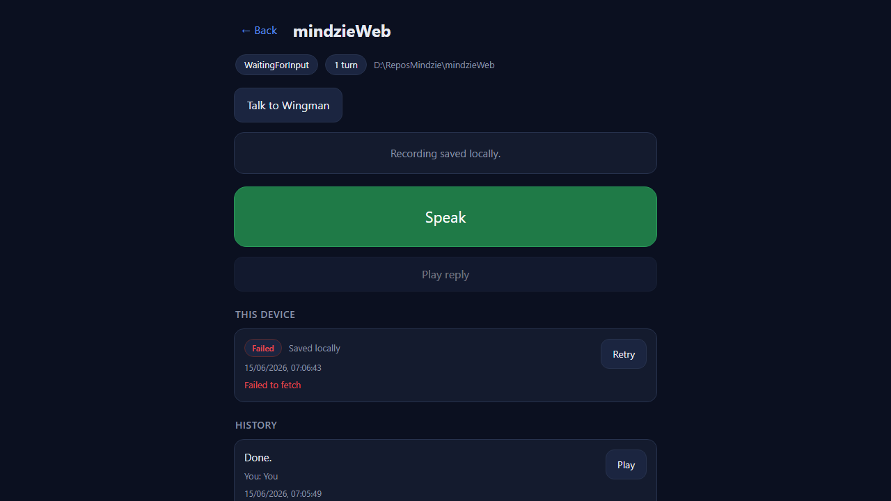
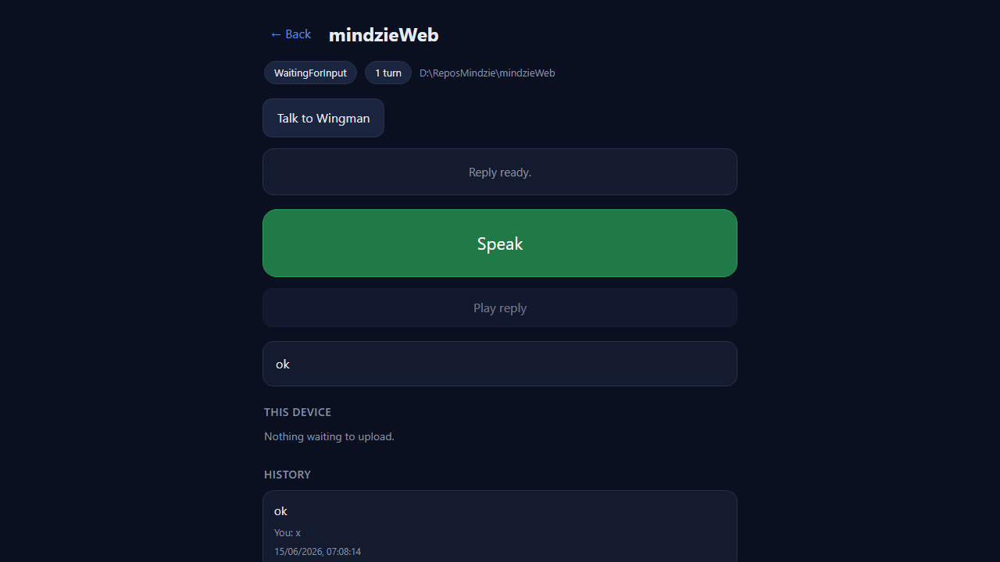
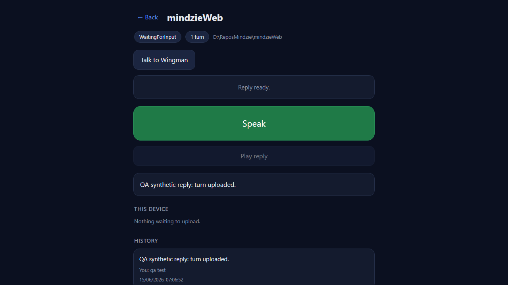

VERIFIED - all 5 acceptance criteria met. PASS (Option A: not merged - left for human merge).
The change is the Cockpit /voice page (new db.js IndexedDB wrapper + outbox
queue in voice.js). The live deployed Gateway on 7878 still proxies an OLD Cockpit that
404s on /voice and /pages/voice/db.js, so I built and ran the
PR-branch Cockpit myself from the feat/425-voice-offline1 worktree
(dotnet build = 0 errors) on http://127.0.0.1:7471, with the real per-machine
Gateway token injected server-side. I drove it with Playwright + a fake microphone, and controlled the
upload network at the browser level.
/voice, /pages/voice/* - served by the PR-branch Cockpit (the code under test).POST .../voice-turn/upload (register) + PUT .../chunk/N - forwarded to the
LIVE Gateway on 7878 (real, harmless staging keyed by upload id).POST .../voice-turn/.../complete - fulfilled with a synthetic 202 { turn_id }.
Only complete resolves the owning Director and fires the send-to-session pipeline; a
synthetic 202 is exactly what the client treats as Uploaded, and it avoids injecting a
transcribed prompt into a real working session. The 202+turn_id path was ALSO confirmed against the
real Gateway (see note).| # | Criterion | Expected | Actual (my proof) | Result |
|---|---|---|---|---|
| 1 | Stop writes audio + metadata to IndexedDB BEFORE any upload; UI immediately shows "saved locally". | IDB record exists with the blob; "Recording saved locally" shown. | On stop the stage line read "Recording saved locally." and IndexedDB held the record
{status, mime:"audio/webm", hasBlob:true, blobSize:31869} with the row badge +
"Saved locally" text. (01) |
PASS |
| 2 | Per-turn status badge transitions Pending -> Uploading -> Uploaded, or -> Failed. | Each state renders a badge. | Initial persisted state is pending (written before any upload). Uploading badge
captured live during a slowed upload (BADGES_SEEN=["Uploading"]). Failed badge rendered on the
blocked upload (01/01b). Uploaded proven by the row clearing to "Nothing waiting to upload."
after the upload completed (04). |
PASS |
| 3 | A failed turn shows a Retry that re-attempts the resumable upload from the stored blob and reaches Uploaded. | Retry control present; re-runs upload from stored blob; reaches Uploaded. | Failed row showed a Retry button. Clicking it re-ran register+chunk (real, from the stored
31869-byte blob) and reached complete -> 202 {turn_id}; the row cleared and IDB emptied
(blob dropped once durable). (03, 04) |
PASS |
| 4 | Reloading while Pending/Failed preserves the turn (read back from IndexedDB) and it can still be retried. | After a full page reload the turn re-appears and Retry still works. | After page.reload() (stage line reset to "Tap Speak and talk."), reopening the session
restored the same row from IndexedDB - same timestamp, Failed badge, blob intact (31869), Retry
present. (02) |
PASS |
| 5 | Network blocked at upload -> saved locally + Failed; restore network -> Retry -> Uploaded + reply. | The full offline -> failed -> reload -> retry -> uploaded path. | With the upload routes aborted the turn went saved locally -> Failed; a reload persisted it; restoring the network and Retry reached Uploaded (real register+chunk on 7878, complete 202 + turn_id) and a reply rendered ("Reply ready."). (01 -> 02 -> 03 -> 04) | PASS |
Negative-checked every screenshot: the session list loads, the session header (state / turn count / repo), the Speak/Play controls, the per-session History list, and the "Talk to Wingman" button (issue #424, this PR's base) all render correctly and are unaffected. No console errors other than the expected "Failed to fetch" from the deliberately-blocked upload. Build clean (0 warnings, 0 errors).
01 - saved locally then Failed (upload blocked)

02 - reload persisted from IndexedDB
03b - Uploading badge (slowed upload)

04 - Uploaded: row cleared + reply

During an initial run my Playwright route matcher had an ordering bug
(the /voice-turn/upload substring also matched the .../complete URL), so ONE
complete call was forwarded to the live Gateway against the user's real mindzieWeb session
(1e3c1269). The fake-mic audio transcribed to the single word "You" and the session replied "Done." This
is a QA-side test artifact, NOT a defect in PR #435; it confirmed (rather than weakened) criterion 5 -
the real Gateway returned 202 + turn_id and the real pipeline reached stage=reply.
The matcher was fixed and all subsequent runs fulfilled complete synthetically (no further
prompts reached any session). Recorded here so the human is aware of the one stray "You" prompt in that
session.
Driver: qa-drive-425.py (committed alongside). QA Agent, CenCon method, 2026-06-15.